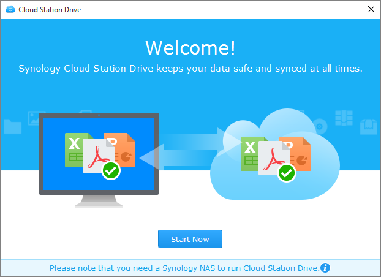

Áttekintés
A Synology NAS eszközökön futó Cloud Station egy fájlok szinkronizálására szolgáló alkalmazás, melynek segítségével egyszerűen szinkronizálhatja Synology NAS eszközén tárolt fájljait más eszközökkel, például számítógépekkel vagy mobileszközökkel (a DS cloud alkalmazás használatával). Telepítse a Cloud Station Server alkalmazást Synology NAS eszközére, majd a Cloud Station Drive alkalmazást számítógépre, ha szeretné automatikusan szinkronizálni a számítógépen tárolt fájlokat a Synology NAS eszközzel.
A Synology NAS és a számítógép közötti kapcsolat beállítása
- Nyissa meg a Csomagkezelési központot, keresse meg a Cloud Station Server alkalmazást, majd kattintson a Telepítés parancsra.
- Indítsa el a Cloud Station Server alkalmazást.
- Az Áttekintés lapon kattintson a Cloud Station Drive alatti gombra a Cloud Station Drive letöltéséhez az Ön operációs rendszerére. (A Cloud Station a Synology Letöltőközpontjából is letölthető.)
- Indítsa el a telepítőt a számítógépén, és kövesse a képernyőn megjelenő utasításokat.
- Telepítés után futtassa a Cloud Station alkalmazást a számítógépén. Kattintson az Indítás most gombra. 
- Adja meg a Cloud Station alkalmazást futtató Synology NAS címét (vagy QuickConnect ID azonosítóját), felhasználónevét és jelszavát. A jobb oldalon található keresés ikonra kattintva rákereshet a helyi hálózaton belüli IP-címekre. Kattintson a Tovább gombra.
- Válassza ki a Synology NAS és a számítógép között szinkronizálni kívánt mappákat a Szerkesztés ikonokra kattintva. A szinkronizálás beállításához ezt követően kattintson a Speciális elemre.
- Törölje a szinkronizálni nem kívánt mappák melletti jelölőnégyzetet.
- Maximális fájlméret megadásával vagy fájlnevek vagy fájltípusok feketelistázásával határozza meg a szinkronizálni nem kívánt elemek körét.
- Adja meg, hogy kétirányú szinkronizálást kíván végezni, vagy csak a Synology NAS eszközön található adatokat kívánja letölteni.
- A beállítás befejezéséhez kattintson a Kész gombra.
- A Cloud Station ikon megtalálható a rendszertálcán.
- A tálcamenü megnyitásához kattintson a tálcaikonra. Ezen a képernyőn megtekintheti fájljainak állapotát, illetve a folyamatok előrehaladását. Ezen a képernyőn megtekintheti fájljainak állapotát, illetve a folyamatok előrehaladását. A Cloud Station indításához kattintson a Főalkalmazás parancsra.
- Indításkor a Cloud Station használatával kapcsolatos tippek jelennek meg. További tippek megjelenítéséhez kattintson a jobbra mutató nyílra, további tájékoztatásért pedig kattintson az Online oktatóanyagok elemre. Amennyiben nincs szüksége tippekre, jelölje be a Ne mutassa ezt többször jelölőnégyzetet.
- Ezt követően már kezelheti szinkronizálási feladatait a Cloud Station Drive alkalmazásban.


Szinkronizált fájl korábbi verziójának letöltése:
- Kattintson a rendszer tálcájában található Cloud Station Drive ikonra, majd a mappa ikonra.
- Kattintson jobb gombbal a kiválasztott fájlra, majd válassza a Synology Cloud Station > Korábbi verziók tallózása lehetőséget.
- Keresse meg a letölteni kívánt verziót, majd kattintson a letöltés ikonra.


Szinkronizált fájl korábbi verziójának letöltése vagy visszaállítása a Cloud Station Server alkalmazásból
- Lépjen a Cloud Station Server > Verzió előzmények menüpontra, majd keresse meg a visszaállítani kívánt fájlt vagy mappát.
- Válassza ki a visszaállítani kívánt fájl, majd kattintson a Tevékenység > Korábbi verziók tallózása lehetőségre.
- Válassza ki a fájl letölteni kívánt verzióját, majd kattintson a Letöltés gombra. Amennyiben biztos benne, hogy a kiválasztott verziót kívánja használni, kattintson a Visszaállítás gombra, mellyel felülírja az aktuális verziót.


Fontos megjegyzések
- Érdemes megtartani a fájlok előző verziót, arra az esetre, ha véletlenül letörölné vagy felülírná azokat.
- A Globális beállítások menüpontban megadhatja, hogy fájl számítógépről való törlése esetén a rendszer visszakeresse-e azt a NAS szerverről, illetve törölje a fájlt a NAS eszközről.
Adatok szinkronizálása mobileszközökre
A DS cloud ingyenesen elérhető az Apple App Store és Google Play áruházakban. A lenti QR-kódot beolvasva egyből a letöltéshez jut.